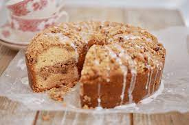
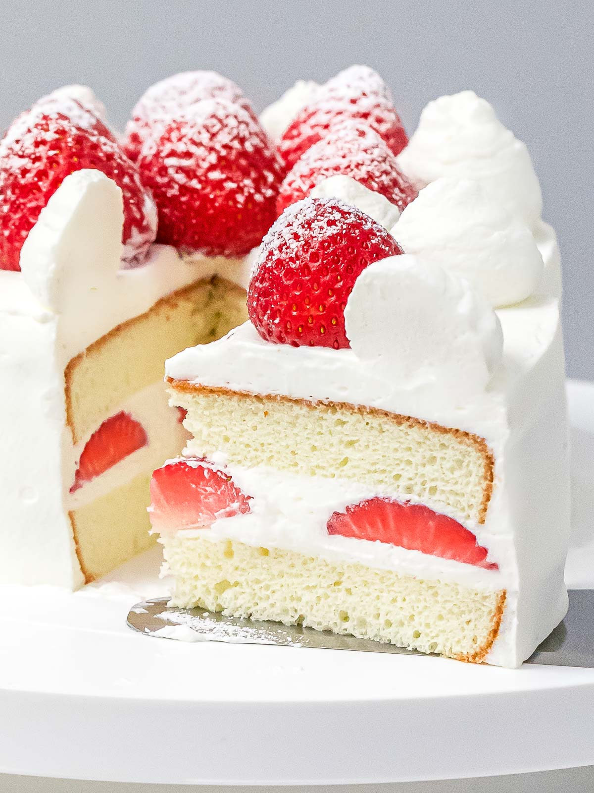

Ingredients :
- 3 eggs, at room temperature
- 1 pinch salt
- ½ cup white sugar
- 3 tablespoons vegetable oil
- 1 teaspoon vanilla extract
- 1 cup all-purpose flour
- 1 teaspoon baking powder
- 2 teaspoons white sugar
- 1 ¼ cups chocolate-hazelnut spread (such as Nutella®)
Directions :
- Preheat the oven to 400 degrees F (200 degrees C). Line a jellyroll pan with parchment paper.
- Beat eggs in a bowl with an electric mixer. Add salt and continue beating until eggs are light and fluffy, about 5 minutes. Add 1/2 cup sugar, 1 tablespoon at a time, and beat for an additional 5 minutes. Stir in oil and vanilla extract.
- Mix flour and baking powder together. Sift into the egg mixture a little at a time, folding in with a spatula. Spread batter onto the prepared baking sheet.
- Bake in the preheated oven until cake is lightly browned, 10 to 12 minutes.
- Lay a clean dish towel on a flat work surface and sprinkle dish towel with 2 teaspoons sugar. Invert sponge cake onto the dish towel and remove parchment paper. Roll up cake with the dish towel and allow to cool completely, about 1 hour.
- Carefully unroll sponge cake. Spread chocolate-hazelnut spread on top, leaving a little room on the edges. Carefully roll up and wrap with plastic wrap. Chill in the refrigerator for 2 hours. Cut into slices.

Ingredients :
Streusel topping and center:
- 1 3/4 cups (8 3/4oz/247g) all-purpose flour
- 1 cup (6oz/170g) brown sugar
- 3/4 cup (6oz/170g) butter, cold and cubed
- 1 1/4 teaspoon cinnamon
- 1/2 teaspoon salt
- 1 1/2 cup (7 1/2oz/213g) pecans, chopped
Coffee cake:
- 1/2 cup (4 oz/115g) butter, at room temperature
- 1 cup (8oz/225g) sugar
- 2 eggs
- 1 cup (8oz/225g) sour cream
- 2 cups (10oz/284g) all-purpose flour
- 1 1/4 teaspoon baking powder
- 1/2 teaspoon baking soda
- 1/2 teaspoon salt
Maple Glaze:
-3/4 cup (3oz/85g) powdered sugar
- 2 tablespoons maple syrup
- 2 tablespoons milk
Directions :
- Preheat oven to 350°F (180°C), then butter a 9.5 inch GoodCook Angel food cake pan.
Make the streusel topping:
- Make the streusel topping: Mix together flour, brown sugar, cinnamon, and salt. Cut in butter using a pastry cutter or rub in with your fingers until small to medium clumps form. Mix in pecans.
For the Coffee Cake:
- On a stand mixer or using an electric hand mixer, beat butter and sugar on medium speed until pale and fluffy. Beat in eggs 1 at a time.
- Add in the flour, baking powder, baking soda, salt, and sour cream and mix until just combined.
- Spoon half the batter into the prepared angel food pan. Sprinkle 1/2 the streusel mixture evenly over batter. Top with remaining batter, and spread evenly using a spatula. Lastly, sprinkle remaining streusel topping evenly over the top.
- Bake for 55 to 65 minutes or until cake is golden brown and a toothpick inserted into the center comes out clean.
- While the coffee cake is baking make the glaze:
- In a small bowl whisk together the powdered sugar, milk, and maple syrup until you have a smooth shiny glaze.
- Once the cake is baked remove it from the oven and transfer the pan to a wire rack, and let cool slightly. Remove from the pan and while the cake is still warm drizzle over the glaze.
- Cover and store the coffee cake at room temperature for 3-4 days.
Ingredients :
- Cheese Cookies
- 20 gr coconut flour
- 60 ml liquid light margarine
Filling:
- 60 grams of ripe and fro, sliced long
-2 ripe bananas, steamed half cooked, cut into squares
-2 coconut milk
-40 ml of Java Sugar
-1/2 tsp agar powder
-2 eggs
-1/4 tsp salt
-150 ml of warm water
-1 pandan leaf
Directions :
- Crush the Cheese Cookies in the container. Add coconut flour and melted butter. Stir well.
- Divide the crust dough into 4 pie molds with a diameter of 10 cm. compact. Store in the refrigerator until set.
- Boil water, coconut milk, agar-agar powder, salt, Javanese sugar and pandan leaves until it boils.
- In a separate bowl, beat the eggs until smooth. Take 1 tablespoon of vegetable coconut milk, put it in the beaten egg mixture and stir quickly. Then, put it back into the pot containing the coconut milk.
- Remove the pie skin from the refrigerator, fill it with pieces of fro and banana. Finally, pour the pie with coconut milk. Refrigerate again until set. Serve for breaking the fast menu or as a snack after tarawih.

Ingredients :
- 125g/4.4oz all-purpose flour
- 100g/3.5oz sugar
- 60g/2.1oz melted butter
- 4 eggs
- About 450g/1lb of strawberries (I used 18 medium-sized strawberries). Halve 10 strawberries.
- About 400ml/0.8pt cream, whipped.
- Syrup (optional) made with 40ml/1.4fl oz water and 10g/0.4oz sugar
Directions :
- Beat the egg yolk with ⅔ of the sugar in a bowl until it becomes whitish and thick (see the video for consistency).
-Beat the egg whites in a different bowl with the remaining sugar to make meringue (see the video for consistency).
- Add the flour to the beaten egg yolk.
- Mix and make smooth batter.
- Mix ⅓ of meringue into the batter
.
- Fold the remaining meringue into the batter.
- Spread melted butter over the batter.
- Fold the butter into the batter.
- Pour the batter into a cake pan and cook in the oven.
The Key to A Fluffy Sponge Cake
- Ensure the bowl and the beater are dry and grease-free because egg white does not like oil. Particularly if your bowl and utensils are plastic, make sure that they are completely oil-free as it is hard to remove grease from plastic bowls and tools.
- Use fresh eggs. Fresh eggs produce finer air bubbles when they are beaten, which results in a fluffier sponge cake.
Bring the egg white at room temperature before beating. This let you beat up the whites easier. The air bubbles in the meringue are not as fine as those made from the chilled egg and results in a slightly coarse sponge. But if you are a beginner, you may want to try this.
- Ensure the egg white does not contain even a tiny piece of egg yolk. Egg white does not like yolk when it comes to making meringue because egg yolk contains fat.
- Do not add a lot of sugar at once to the meringue. As you add sugar, the foam diminishes a bit, so you want to add small amount at a time to minimise the impacts on the meringue.
- When mixing the batter with flour or merengue, or butter, do not overmix. You need to gently fold the batter. By over mixing, you are getting rid of tiny foam.
- Gently but quickly fold the batter after you have added butter as the butter causes the foam to disappear fast.
Decorating
- Cool the sponge cake upside down so that the top of the cake is perfectly flat and easy to decorate.
- Slice the cake horizontally in the middle to make two round cake pieces. Coat the cut sides of the cake with syrup.
- Spread the bottom part of the cake with the whipped cream, then place halved strawberries on top, covering the entire surface.
- Cover the strawberries with more cream, then put the top part of the sponge cake on it.
- Coat the side and the top of the cake with cream, then decorate the outer edge of the round surface using a piping tip.
- Place the strawberries on top of the cake.